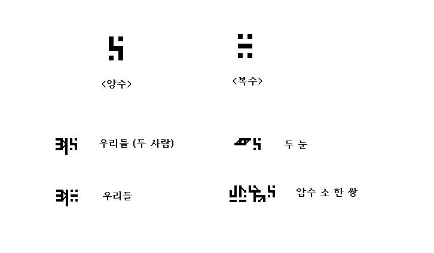
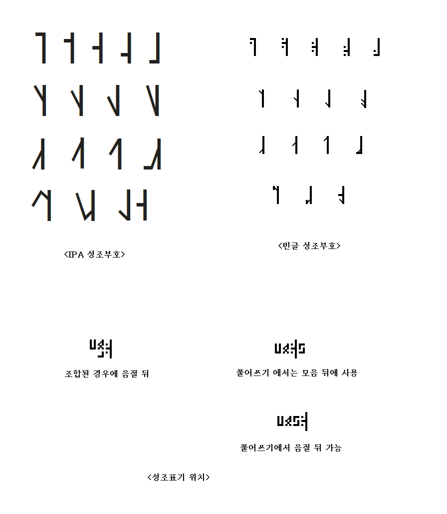
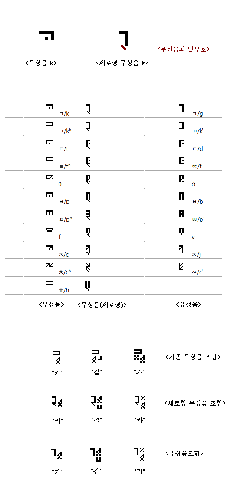
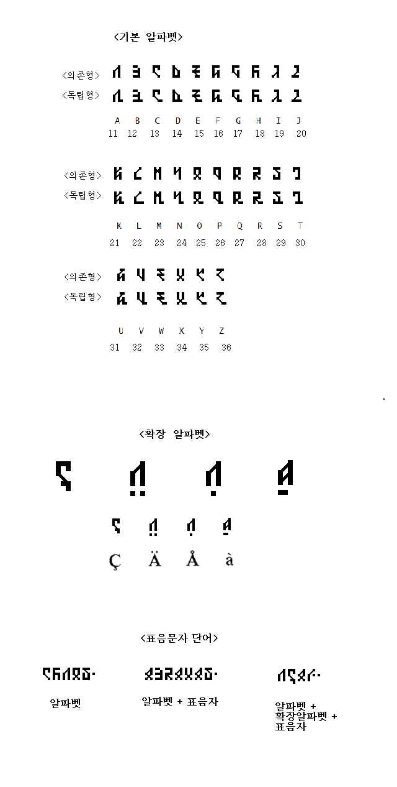
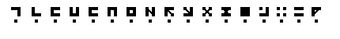
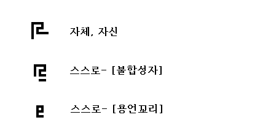
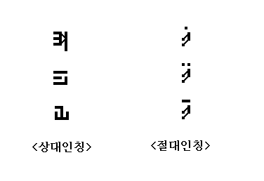
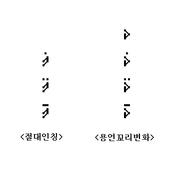

[0.8.1]
몇몇 개선사항 (20181221제안)¶
다음은 한형준님이 제안하신 것에 의거하여 빈글의 문자와 문법을 개선한 것이다. 기존의 문법을 크게 벗어나지 않는 선에서 몇가지 사항을 추가하거나 기존의 개념을 보완하였다.
양수(兩數)와 복수(複數)¶
어떤 사물이나 사람 등이 쌍으로 있는 경우, 복수를 표시하는 부호를 사용해도 되지만 복수 대신 양수를 사용하면 원하는 의미를 더 잘 나타낼 수 있다.
획 쓰는 순서¶
문자마다 획을 쓰는 순서를 정하자는 좋은 제안이 있었다. 현재 획을 쓰는 데는 별 원칙도 없고 순서도 없다. 일단 문자의 쓰는 순서가 정해지면 문자획의 입력시 마다 이루어지는 유사한 문자들의 검색과 코드입력의 절차가 더 간소화 될 수 있는 이점이 있다.
그러나 문자마다 쓰는 순서를 정하는 것은 상당한 시간이 걸릴 것이다. 그렇기에 일반적인 원칙만 정하기로 한다. 그리고 이는 다만 권장 사항이다.
- 이어진 획들은 위에서 아래로, 왼쪽에서 오른쪽으로 그린다.
- 사선의 경우에는 좌상에서 우하로 또는 우상에서 좌하로 그린다.
- 크고 긴 획을 먼저 그린다. 떨어진 점획은 나중에 그린다.
성조표기¶
표음문자는 성조를 함께 표기할 수 있다. 성조는 IPA ( https://en.m.wikipedia.org/wiki/Tone_letter ) 를 기본으로 구성되다. 다음은 IPA 의 성조부호에 대응하는 빈글의 성조부호이다.
표음문자로 이루어진 단어에서 성조는 음절 뒤 또는 모음 뒤에 온다. 조합된 문자인 경우에는 음절 뒤에 온다.
무성음 음소문자¶
기본형 표음문자에서 유성음과 모음 문자는 세로로 길고 무성음 가로로 길다. 따라서 무성음은 문자조합이나 일렬로 늘여쓸 때 다른 문자들과 잘 어울리지 않게 보이는 단점이 있다. 이런 경우 무성음화 덧부호를 사용하면 좋다. 무성음화 덧부호가 있으면 그 표음문자(자음문자)는 그에 관계되는 무성음으로 변한다.

알파벳의 확장형¶
알파벳은 A-Z 까지 26 개의 기본 알파벳이 있다. 알파벳은 의존형과 독립형이 있으며 숫자와 함께 사용되거나 표음문자와 함께 사용하여 표음단어를 만들 수 있다.
알파벳은 또한 확장형을 만들어 사용할 수 있다. 기본 알파벳이 의존형과 독립형이 있는 반면 확장형 알파벳은 모두 의존형이다.
확장알파벳의 문자형태는 기본 알파벳 문자의 아래쪽이나 오른쪽으로 문자의 획이 늘어나거나 덧부호가 붙는 방식이다. 또는 기존의 알파벳과 유사하지 않은 전혀 새로운 문자를 추가해도 된다.
단 확장 알파벳은 숫자로 사용할 수 없다.

격조사의 특징¶
용언에 사용되는 동사를 함수라고 생각할 때, 격조사는 함수에서 꼭 필요한 인수라고 볼 수 있다. 이에 반해 후치사는 키워드인수로 볼 수 있다. python 프로그래밍 언어에서 함수의 위치인수(positional argument)와 키워드인수(keyword argument)의 관계를 생각하면 이해하는데 도움이 된다. 또한 격조사는 동사에 따라 다르게 해석될 수 있다. 이에 반해 후치사는 고정적으로 해석된다.
즉, 동일한 격조사라도 동사에 따라 다른 용도로 쓰이게 된다.

주격, 속격, 목적격, 대격, 탈격, 조격, 처격, 호격, 공동격, 방항격, 원인격, 등의 격은 어느 특정한 격조사에 정해진 것이 아니라 동사에 따라 필요한 격을 위 열거된 다양한 격조사들 중 일부를 적절하게 셋팅하여 사용하면 된다. 자유로운 점이 있지만 동사들 간에 격조사의 설정에 있어서 유사성이 어느 정도 유지되는 것을 권장한다.
스스로 -하다 <self 용언꼬리>¶

"스스로 ~ 하다" 는 문장을 만드는 데는 불합성자나 용언꼬리를 사용할 수 있다.
스스로- 불합성자, 용언꼬리는 원래 "자체","자신" 의 뜻을 지닌 문자에서 파생된 것이다.
절대적 인칭¶

절대적인칭은 같은 기초문자 위에 점이나 바가 붙어서 인칭을 구분한다. 기존의 '나', '너', '그' 는 상대적인칭이다. 의미상 별 차이는 없다.
굳이 차이를 찾는 다면 상대적시점(주관적시점)에서는 주관과 의지가 내재되어 있다면 절대적시점(객관적시점)에는 주관성이 배제되어있다. 또한 주관적시점의 '나', '너' 는 절대적시점의 '나', '너' 보다 더 강조적이다.
이 글을 절대적 인칭의 특징을 반영해서 의역을 하면 다음과 같다.
너라는 자는 나라는 자와 함께 그 지그재그로 난 강을 건너야 한다.
즉 객관적 당위성이 더 엿보인다.
이에 반해 기존의 대명사를 사용하면 보다 주관적인 요구사항에 가까운 의미가 된다.
주관적 의지를 보여준다고 할 수 있다.
그러나 일상적이거나 모호한 경우라면 굳이 절대적인칭과 상대적인칭을 구분하지 않고 사용해도 무방하다.
용언꼬리의 인칭에 따른 변화¶

주어의 인칭에 따라 용언꼬리는 변화될 수 있다. 절대인칭에서 점과 바가 붙는 것처럼 용언부호위에 인칭에 맞는 한점, 두점, 바를 붙여주면 된다.
주어가 있는 경우에는 용언꼬리 변화는 선택적이다. 일반적으로 기존의 방식대로 아무런 변화없이 용언꼬리를 사용한다.
다음 문장은 용언꼬리에 인칭의 변화가 반영되어 있으므로 주어가 생략되어 있어도 동일한 의미로 해석될 수 있다.
다음은 의문문과 인칭의 복수형에서 용언꼬리의 인칭변화로 주어를 생략한 경우를 보여주고 있다.

너는 BTS춤을 좋아하니?

(너는) BTS춤을 좋아하니?
이 문장은 상대방(너)에게 묻는 것으로 주어의 생략이 더 자연스럽다.

{kind=link}
{kind=link}
{kind=link}
{kind=link}
{kind=link}
{kind=link}
{kind=link}
{kind=link}
{kind=link}
{kind=link}
{kind=link}
{kind=link}
{kind=link}
{kind=link}
복수형의 경우 주어가 생략되면 일반명사의 복수형을 만드는 것처럼 용언에 사용된 동사를 복수형으로 만들면 된다.